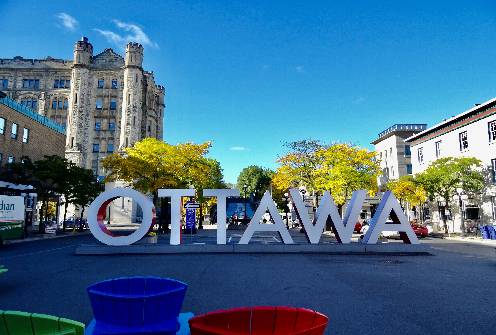

Travel Log
Home
Destinations
Canada
Colombia
Thailand
Vietnam
About
Canada is known for its diverse culinary scene, reflecting its multicultural society. From poutine (a classic Canadian dish of French fries topped with cheese curds and gravy) to butter tarts (sweet pastries filled with a gooey butter and syrup mixture), Canada offers a range of unique and delicious treats. Additionally, cities like Vancouver and Toronto boast thriving food scenes with international cuisines from around the world.
Canada is renowned for its breathtaking natural landscapes and outdoor adventures. The country is home to stunning national parks like Banff and Jasper, where you can explore the majestic Rocky Mountains, hike picturesque trails, and spot wildlife. The Niagara Falls, a world-famous natural wonder, attracts millions of visitors each year with its awe-inspiring beauty and thrilling boat tours.

Canada, the second-largest country in the world, spans approximately 9.98 million square kilometers, extending from the Atlantic Ocean to the Pacific Ocean and sharing the longest international border with the United States. Officially bilingual, English and French are recognized as the country's official languages. Canadians benefit from a publicly funded healthcare system that ensures access to medical services for all citizens and permanent residents. Moreover, Canada's commitment to education is evident through its well-regarded public education system and world-class universities. These diverse elements form the foundation of Canada's identity.
Canada celebrates a multitude of cultural festivals throughout the year, showcasing its diverse heritage. For example, the Calgary Stampede in Alberta is a world-renowned event that combines rodeo competitions, live music, and Western traditions. The Montreal International Jazz Festival is another popular event, attracting jazz enthusiasts from around the globe. From Chinese New Year parades to Caribbean Carnival celebrations, Canada offers a rich tapestry of cultural festivities.